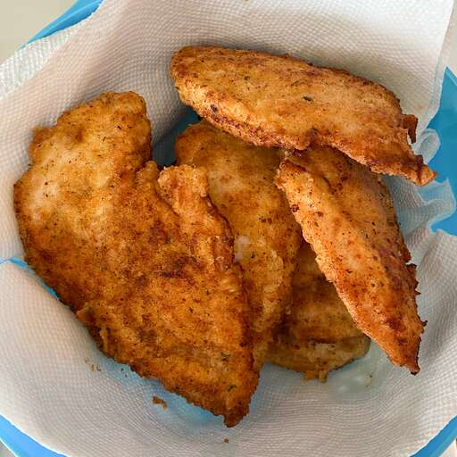

Garlic Fried Chicken
- We have determined the nutritional value of oil for frying based on a retention value of 10% after cooking. The exact amount may vary depending on cook time and temperature, ingredient density, and the specific type of oil used.

Ingredients
- 2 teaspoons garlic powder, or to taste
- 1 teaspoon ground black pepper
- 1 teaspoon salt
- 1 teaspoon paprika
- ½ cup seasoned bread crumbs
- 1 cup all-purpose flour
- ½ cup milk
- 1 egg
- 4 skinless, boneless chicken breast halves - pounded thin
- 1 cup oil for frying, or as needed
Steps
- In a shallow dish, mix together the garlic powder, pepper, salt, paprika, bread crumbs and flour. In a separate dish, whisk together the milk and egg.
- Heat the oil in an electric skillet set to 350 degrees F (175 degrees C). Dip the chicken into the egg and milk, then dredge in the dry ingredients until evenly coated.
- Fry chicken in the hot oil for about 5 minutes per side, or until the chicken is cooked through and juices run clear. Remove from the oil with a slotted spatula, and serve.